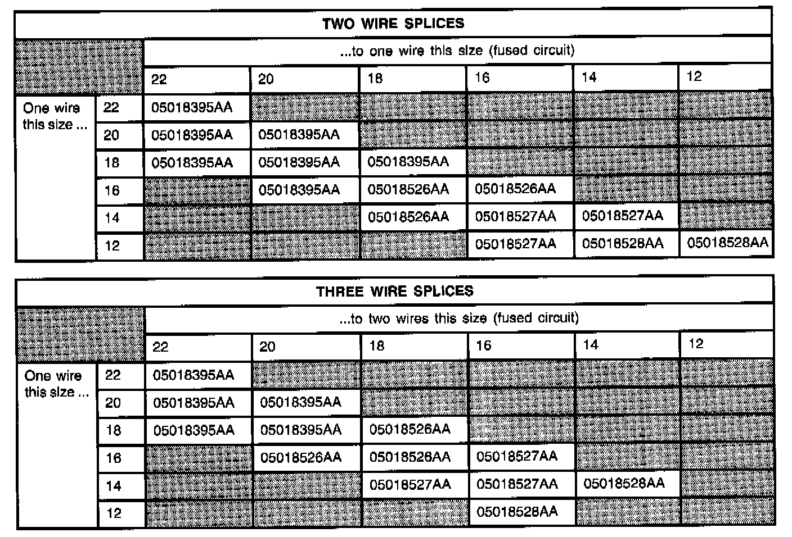
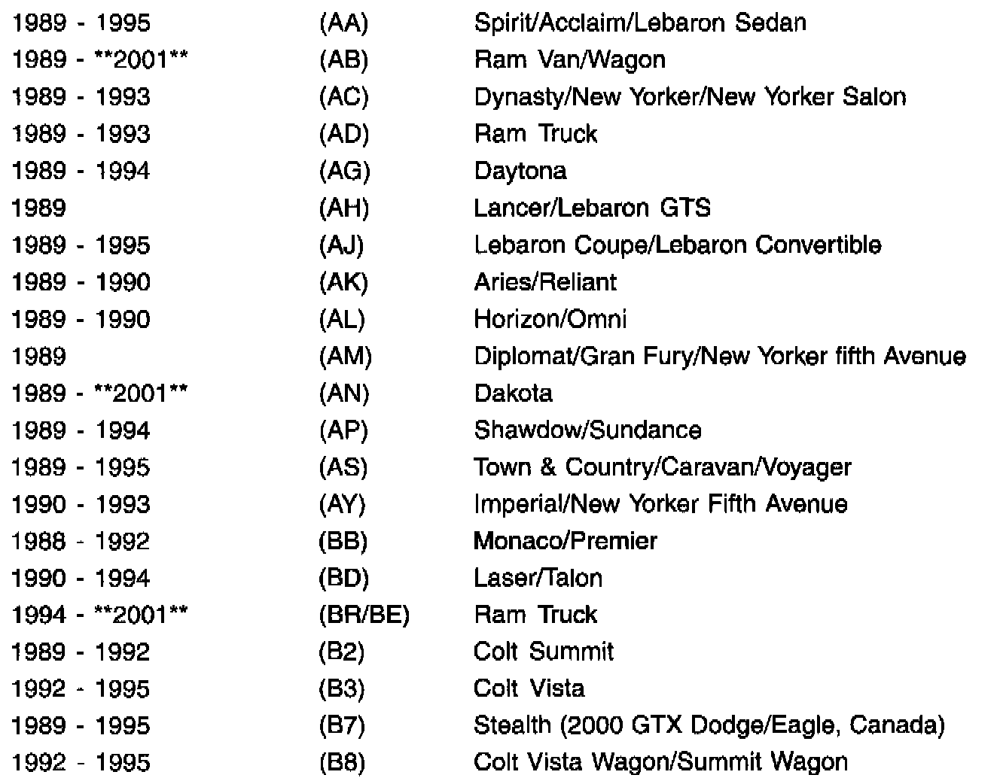
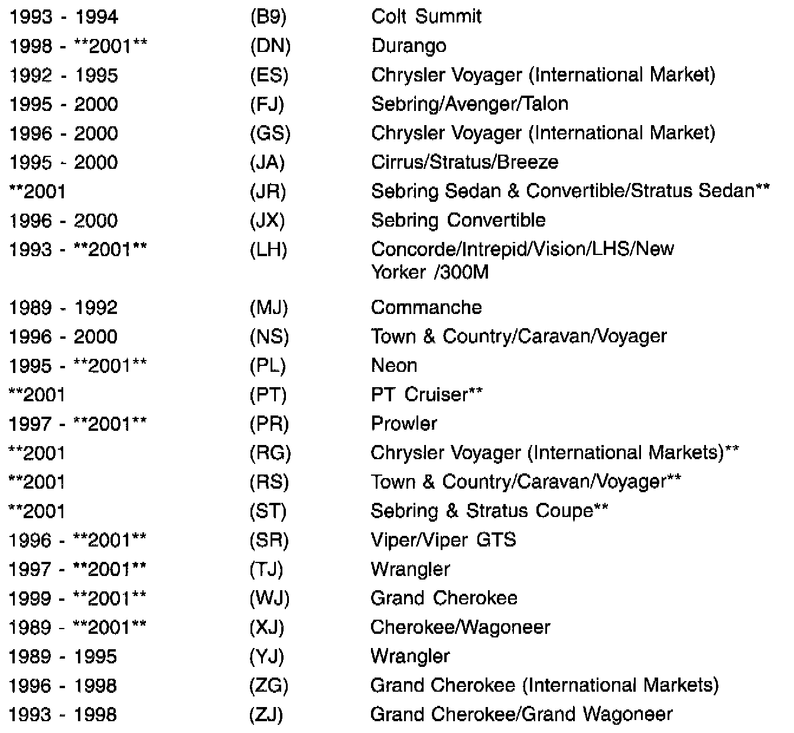
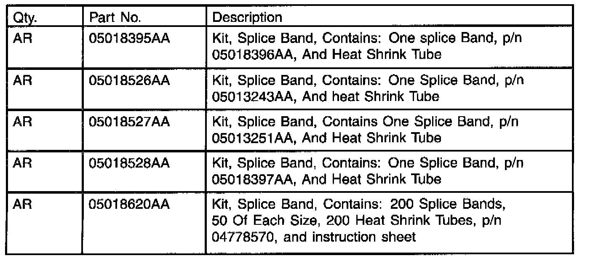
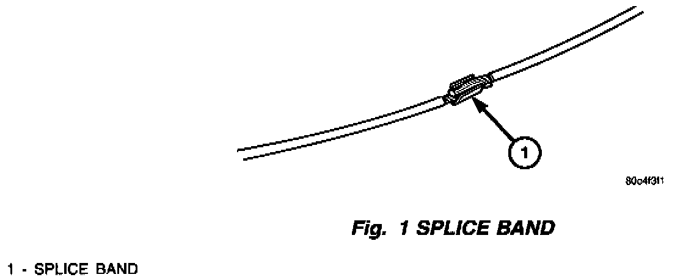
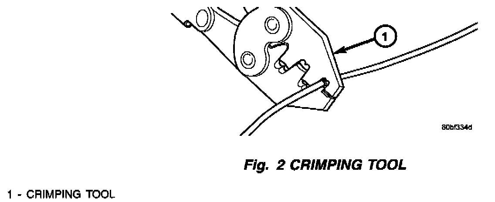
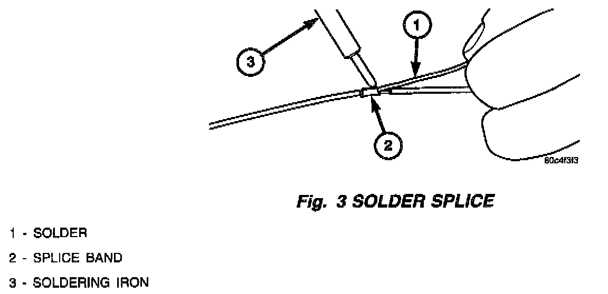
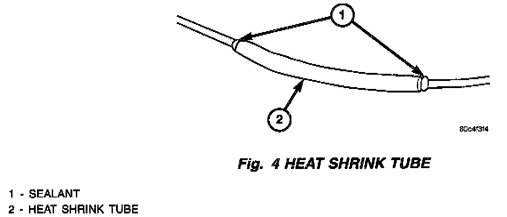

Wiring - Revised Splicing Procedure
NUMBER: 08-006-00 REV. AGROUP: Electrical
DATE: Dec. 29, 2000
THIS BULLETIN SUPERSEDES TECHNICAL SERVICE BULLETIN 08-06-00, DATED FEBRUARY 25, 2000, WHICH SHOULD BE REMOVED FROM YOUR FILES. ALL REVISION ARE HIGHLIGHTED WITH **ASTERISKS**AND INCLUDE PART APPLICATIONS AND ADDITIONAL MODELS.
SUBJECT:
Wire Splice Repairs

WIRING REPAIR SPLICE REQUIREMENTS
DISCUSSION:
This bulletin provides a revised wire splice procedure and related parts. This is the only procedure approved by DaimlerChrysler Engineering. This procedure must be used anytime a wire splice repair is required.


MODELS:

PARTS REQUIRED:
NOTE:
IF THE REPAIR REQUIRES ADDITIONAL WIRE ALWAYS USE THE SAME OR NEXT LARGER GAUGE WIRE.
EQUIPMENT REQUIRED:
REPAIR PROCEDURE:
1. Remove one-half (1/2) inch of insulation from each wire that needs to be spliced.
2. Place a piece of sealant lined heat shrink tubing, p/n 04778570, on one side of the wire. Make sure the tubing will be long enough to cover and seal the entire repair area.

3. Place the strands of wire overlapping each other inside of the splice band (Fig. 1).

4. Using crimping tool, Mopar p/n 05019912AA, crimp the splice band and wires together (Fig. 2).
CAUTION:
DO NOT USE ACID CORE SOLDER.

5. Solder the connection together using rosin core type solder only (Fig. 3).

6. Center the heat shrink tubing over the joint and heat using a heat gun. Heat the joint until the tubing is tightly sealed and sealant comes out of both ends of the tubing (Fig. 4).
POLICY: Information Only